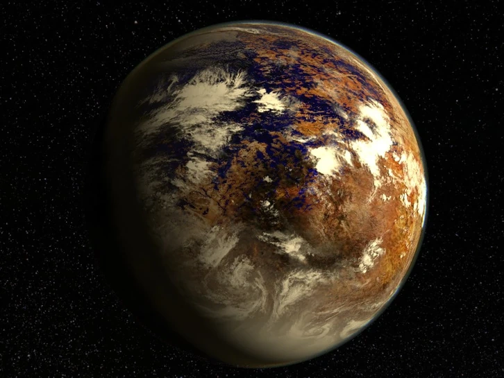

Planets Inside and Out of Our Solar System
Outside of The Solar System
There are tons of planets and moons outside of our solar system but they are all mostly light years away and would take tons of years to reach them. Some of those planets are more habitable than Earth like:
- TOI - 733B
- Keplar - 452B
- Keplar - 186F
- Gliese - 667Cc
- Proxima Centauri B
- TRAPPIST - 1e
- Keplar - 1649c
The most habitable of these planets being TRAPPIST - 1e. This super Earth is part of the TRAPPIST - 1 system which contains 7 planets, planets e, f, and g being located in the habitable area of the star. This habitable area is where temperature is just right and enough for liquid water to be able to exist on the planets.

Planets Inside of Our Solar System (Most Habitable to the Least Habitable)
These are the planets of our Solar System and most of these planets are way more habiable than others. Some of them are gas giants which already make them very unhabitable because we can't land on them.
- Earth - The Planet that we live on that keeps us alive
- Mars - Used to be like Earth but had all of its water vaporized
- Venus - Extremely hot temperatures making it too hot to live on
- Mercury - Mercury has no atmosphere and it has high radiation levels
- Jupiter - Jupiter is a gas giant but also has tons of pressure making it impossible for us to live on
- Saturn - Saturn is also a gas planet and has no solid surface
- Uranus - Uranus has extreme temperature and has volatile materials
- Neptune - Neptune is so cold and it doesn't have a solid surface to stay on